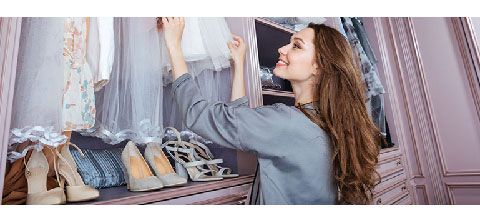

Mantelo en su Sitio
Existen muchas maneras de tener un clóset muy ordenado; solo se necesita de tiempo para lograr arreglarlo según el gusto de cada quien
En muchas ocasiones y por cuestiones de tiempo, tanto hombres como mujeres suelen salir de sus casas colocándose lo primero que ven en el armario, lo cual va desorganizando todo en él. Asimismo, existen prendas que por algún motivo se dejan de usar, pero aún se conservan y ocupan un buen espacio en el ropero. Sigue los siguientes tips que te ayudarán a mantener todo en su sitio, y lograr así que cada artículo tenga un lugar preciso donde puedas hallarlo con facilidad:
Saca todo del armario
Lo primero que debes hacer es visualizar qué tienes dentro, y para esto, es necesario que saques todo del clóset, así podrás empezar a ordenar teniendo una buena idea del espacio que tienes disponible para ello.
Tipo de prenda
Cada camisa, pantalón o cualquier otra prenda tiene un estilo distinto, una textura, un color o algo que los hace diferenciarse de los demás. En este caso, puedes organizar los tipos de prenda, es decir, colocar franelas en un sitio, los suéteres en otro y las camisetas colocarlas en otro apartado. Así sabrás qué y cuánto tienes de cada una.
Utiliza ganchos
Aquella ropa que se encuentre guindada en ganchos es más fácil de encontrar y puede ocupar menos espacio. Trata de colocar esas prendas que más te gustan y usas más en perchas, incluso para que no se arruguen.
Cajones o gavetas
Son una gran opción para guardar las cosas pequeñas como medias y ropa interior; incluso puedes colocar en ellas la ropa de cama. Pueden facilitarte el hecho de no tener todo regado en el dormitorio.
No botes las cajas de zapatos
Estas ayudarán también para guardar algunas prendas pequeñas o seguir manteniendo en orden tu calzado.
Los pantalones
Estos pueden ocupar un gran espacio en el armario si no se mantienen colgados, y más los jeans, que son de tela más gruesa; mientras que otros son de materiales más delicados y se deben tratar con más cuidado para no dañarlos.
Cinturones, bufandas y corbatas
Son pequeños y fácilmente puedes colocarlos en alguna gaveta o cajón; aunque hay personas que les gusta mantenerlos colgados en ganchos, lo cual también es una buena opción.
Maximiza tu espacio
Si eres de esas personas que suelen tener muchas ideas y les gusta crear cosas, considera añadir barras en tu armario para colgar más ropa. Esto ampliará todo el espacio.
Coloca un perfumador
Tanta ropa acumulada en un lugar puede hacer que agarre mal olor; por eso se recomienda colocar dentro del clóset un perfumador de prendas.